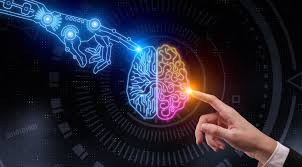

La inteligencia artificial (IA) es un conjunto de tecnologías que permiten que las computadoras realicen una variedad de funciones avanzadas, incluida la capacidad de ver, comprender y traducir lenguaje hablado y escrito, analizar datos, hacer recomendaciones y mucho más.
Los expertos en ciencias de la computación Stuart Russell y Peter Norvig diferencian varios tipos de inteligencia artificial:
maquinas reactivas: IA limitada que solo reacciona a diferentes tipos de estímulos basados en reglas preprogramadas. Deep Blue de IBM, que venció al campeón de ajedrez Garry Kasparov en 1997, fue un ejemplo de una máquina reactiva.
Memoria limitada: Puede usar la memoria para mejorar con el tiempo mediante el entrenamiento con datos nuevos, por lo general, a través de una red neuronal artificial o algún otro modelo de entrenamiento.
Teoría de la mente: Actualmente no existe IA con teoría de la mente, pero se están investigando distintas posibilidades. El término hace referencia a IA que puede emular la mente humana y tiene capacidades de toma de decisiones similares a las de un ser humano, lo cual incluye reconocer y recordar emociones, y reaccionar en situaciones sociales como lo haría un ser humano.
Autoconocimiento: Un paso más allá de la IA con teoría de la mente, el concepto de IA con autoconocimiento describe una máquina mítica que tiene conocimiento de su propia existencia y tiene las capacidades intelectuales y emocionales de un ser humano. Al igual que la IA con teoría de la mente, la IA con autoconciencia no existe en la actualidad.

Ya en la época moderna, John McCarthy acuñó el término «inteligencia artificial» en 1955. En 1956, McCarthy y algunos otros organizaron una conferencia denominada «Dartmouth Summer Research Project on Artificial Intelligence». Este encuentro dio lugar a la creación del aprendizaje automático, el aprendizaje profundo, el análisis predictivo y, ahora, el análisis prescriptivo. También dio lugar a un campo de estudio totalmente nuevo: la ciencia de los datos.